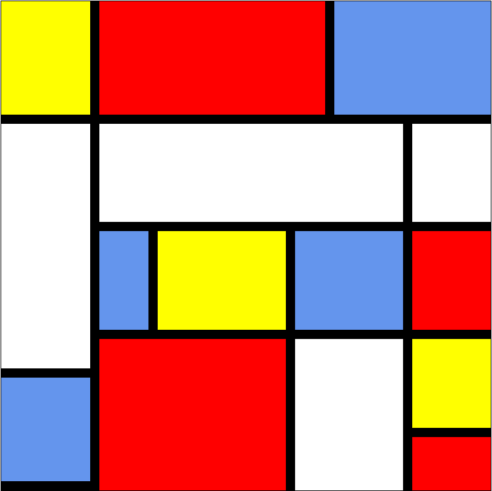

Mijn projecten:
naam: piet mondriaan
door: Cristian Jourdan
dit was mijn aller eerste projectje
die ik moest gaan maken. ik moest
hier voor mijzelf een piet mondriaan gaan maken. ik vond deze opdracht echter erg makkelijk omdat de structuur al gemaakt was en ik alleen de kleuren moest maken. 
naam: Projectschool
door: Cristian Jourdan